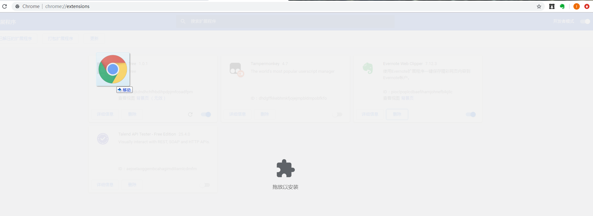
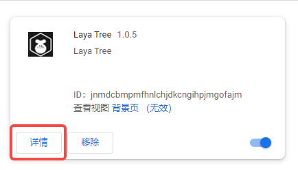
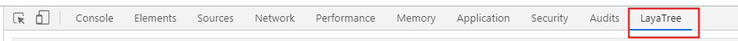
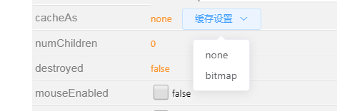

LayaTree调试工具
Author：李尔
[!Note]
LayaTree是LayaAir引擎开发者李尔专门为LayaAir引擎广大的开发者而设计的Chrome浏览器插件工具，该工具能在项目运行时阶段进行调试和修改。
一、LayaTree安装
1.1 通过Chrome应用商店添加
[!Tip|label:Tips]
通过Chrome应用商店添加需要科学上网(vpn翻墙)
LayaTree已在chrome浏览器网上商店上架，搜索laya即可。如下图所示：

也可以直接在Chrome里输入安装地址：https://chrome.google.com/webstore/detail/laya-tree/jnmdcbmpmfhnlchjdkcngihpjmgofajm?hl=zh-CN&authuser=0
如下图所示：

1.2 下载并安装
也可以通过作者提供的国内zip包地址（ v1.0.5）下载：
LayaTree zip包：https://womenzhai.cn/LayaTree_V1.0.5.zip
zip包安装方法
打开Chrome浏览器进入chrome://extensions/ 页面
打开开发者模式，
将解压后crx文件拖入该页面即可，安装成功后重启浏览器。 
[!Tip|label:Tips]
需要注意的一点是: 如果需要调试的页面是文件网址，需要打开允许访问文件网址。否则无法识别当前laya引擎;


二、LayaTree 使用
2.1 使用的入口
在需要调试的项目页面(需未混淆代码)，打开开发者工具页面(F12或 Ctrl+Shift+I)
选择LayaTree页签，如下图所示 
2.2 使用技巧
2.2.1 更新节点树列表的方式
LayaTree设计的本意是尽可能少的影响到游戏，做一个安安静静的的幕后操作者。所以不会去实时更新当前页面的节点树。
所以需要手动点击捕获刷新按钮来更新节点树列表。或者勾选自动刷新节点树的选项。如下图所示：
开启自动刷新节点树功能后，能够实时看到场景层级的变化，不需要手动捕获刷新，当场景层级非常多的时候会轻微影响到性能调试的准确性。如果在进行性能调优，建议不要开启（默认关闭）。日常调试开发未有影响。
2.2.2 运行时调整参数：操作Camera相机节点
示例：操作Camera相机节点,可以通过鼠标拖放或输入数值操作节点的位移,旋转和缩放。
通过便捷的下拉框切换相机的clearFlag.开启或关闭HDR. 此外相机的FOV,远近裁面和比例都可以快速的动态修改,极大的便利了镜头调整. 加入了正交相机开关orthographic。

2.2.3 运行时调整参数：设置点击事件与穿透控制
操作Sprite节点,除了常规节点的位移,旋转和缩放.还能够动态设置层级关系zOrder,锚点,尺寸
此外还有开发中经常需要用到的设置点击事件与穿透控制

2.2.4 运行时调整参数：文本内容直接编辑
操作文本节点,文本内容直接编辑
非常好用的基于拾色器的颜色调整
使用下拉框来选择文本的水平对齐和垂直对齐方式
字体大小,粗细,描边,overflow超出行为随意调节

2.2.5 基于AOP的暂停与单帧调试运行
基于AOP的暂停与单帧调试运行,能够在不修改源码的情况下控制引擎循环（需要注意的是，暂停时修改的属性需要下一帧才会更新渲染，所以修改数据时要点击单帧后查看） 支持TimeScale时间缩放,最高支持50倍速,尽享鬼畜与丝滑

2.2.6 cacheAs优化技巧
cacheAs为"none"，不做任何缓存.当值为"bitmap"时，webgl模式下显示对象使用renderTarget缓存成静态图像可以大幅提升渲染效率.但是额外创建的renderTarget对象，会增加内存开销.通过该选项可以便捷的切换模式,找到优化方向.
 7.增加标记选中功能,勾选后,选中2d节点时,会显示红框标记

三、工具服务
LayaTreeQQ群： 200482074